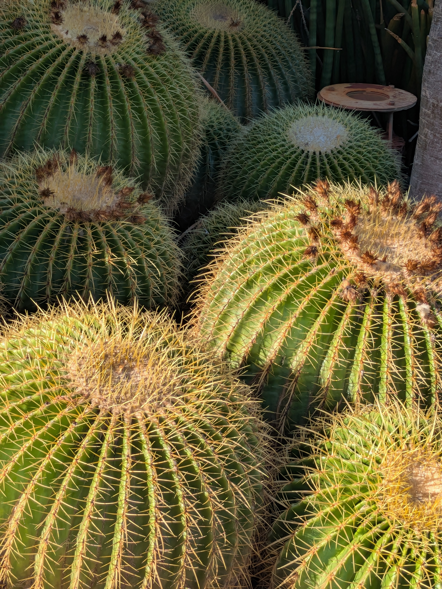

Golden Barrel Cactus (Echinocactus grusonii)

The Golden Barrel cactus is an iconic part of the Arizona scenery, characterized by its small globe-like appearance. It serves as an important source of water for the native life in Arizona during dry seasons and water is hard to come by. Making them an exceedingly popular water storing cactus. However, despite its popularity in home gardens and house plants the Golden Barrel in the wild is still endangered, as they lost a significant amount of growing land between Arizona and Mexico. As such it is illegal by law to poach water storing cactus like the Barrel Plants. It is more important than ever to keep up care for these integral parts of the eco system so that their population may one day thrive.
| Golden Barrel Cactus | description | amount |
|---|---|---|
| Light Exposer | The Golden Barrel cactus does best in full sun, placing it where it can get unobstruction to sunlight is ideal. | 6+ hours |
| Watering | Because the Golden Barrel cactus is a water-storing cactus, it requires minimal amount of watering. | once per month. |
| Soil Needs | The barrel cactus needs well draining soil, avoid anything that could retain water or is highly acidic with a high ph level. | mix sand, gravel, and cactus potting mix. |